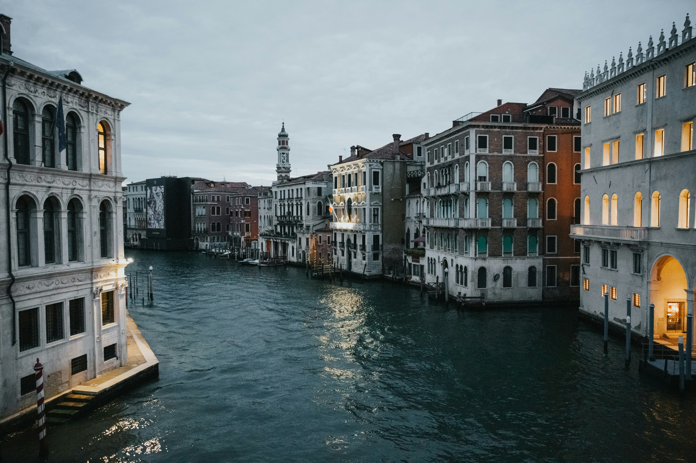
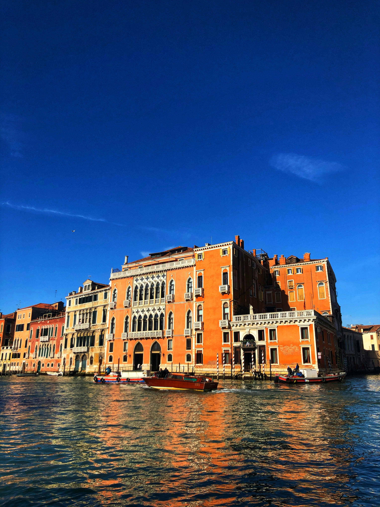
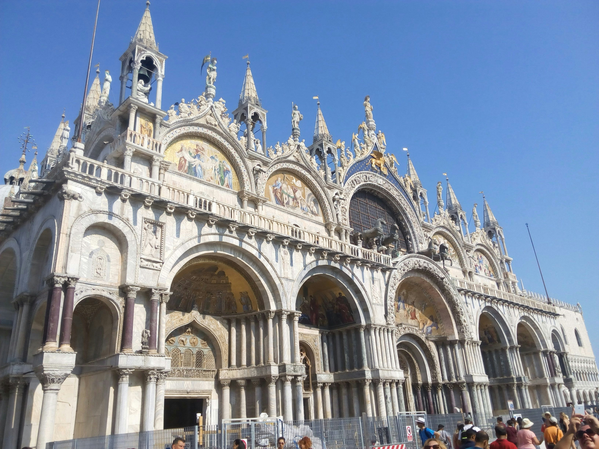

Venecia
Venecia es una ciudad única en el mundo, construida sobre el agua, llena de historia, romanticismo y belleza en cada rincón.
Estos tres destinos son imperdibles:
Estos tres destinos son imperdibles:
- 🏛️ Plaza de San Marcos – El corazón de Venecia La Piazza San Marco es el centro neurálgico de la ciudad y uno de los lugares más fotografiados de Italia. Aquí se encuentran tres íconos venecianos: la imponente Basílica de San Marcos, el elegante Palacio Ducal y el Campanile, desde donde podés disfrutar una vista panorámica increíble.
- 🚤 Gran Canal – El alma acuática de la ciudad; El Gran Canal es la vía principal que atraviesa Venecia en forma de S. Navegarlo en vaporetto (transporte público acuático) o en góndola es una experiencia inolvidable. A lo largo del recorrido verás palacios históricos, iglesias, y el famoso Puente de Rialto, uno de los símbolos más antiguos y hermosos de la ciudad.
- 🎭 Murano y Burano – Las islas con alma propia; a pocos minutos en barco desde el centro, estas dos islas son una visita obligada. Murano es famosa por su arte en vidrio, donde podés ver demostraciones en vivo de los maestros vidrieros. Burano, por su parte, enamora con sus casas de colores vibrantes y su tradición en encajes artesanales. Un paseo lleno de color, cultura y tranquilidad.
✨ Venecia te espera con su magia flotante, cada rincón de Venecia guarda una historia, un secreto y una postal para llevarte en el alma. Viví la ciudad más romántica del mundo como se merece: sin apuro, con los sentidos bien abiertos y el corazón listo para enamorarse.


